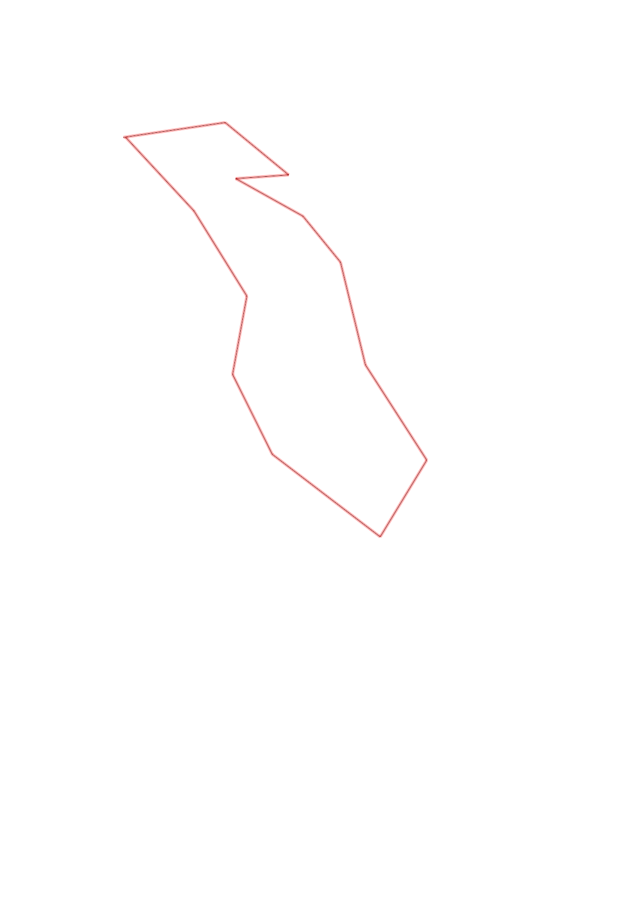
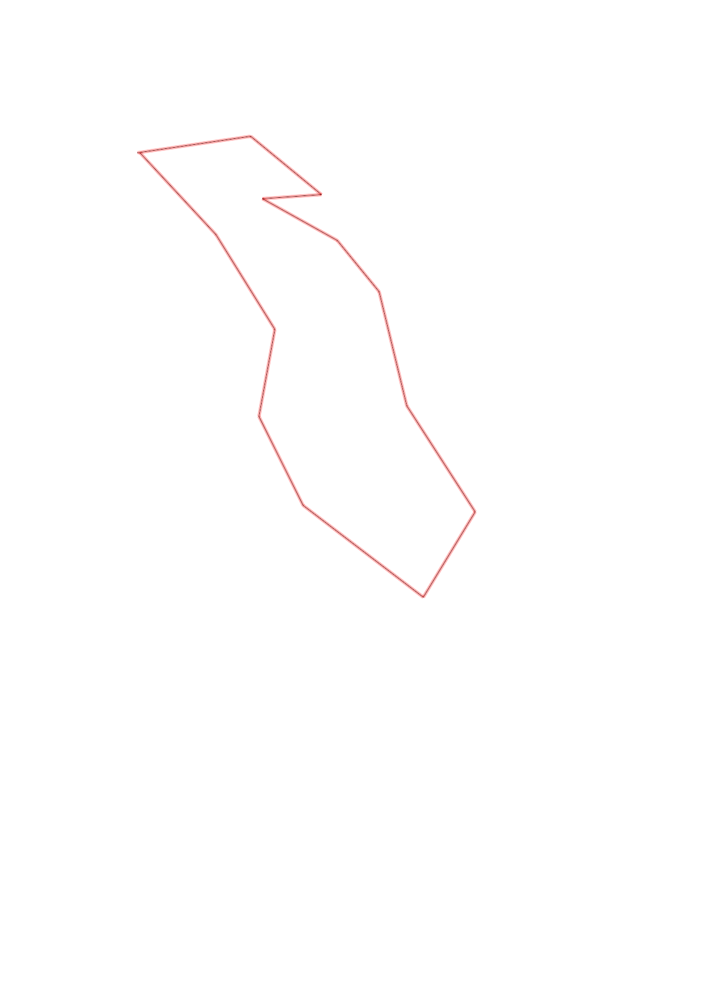

| Control |
Points |
Time Punched |
Distance |
Your Time |
Pace |
Place |
Fastest Time |
Median Time |
% Behind Fastest |
| 33 |
30 |
|
0.49 |
0:03:20 |
06:48 |
4 / 8 |
0:02:06 |
0:03:23 |
58% |
| 57 |
50 |
|
0.39 |
0:05:22 |
13:45 |
1 / 5 |
0:05:22 |
0:06:02 |
0% |
| 32 |
30 |
|
0.25 |
0:02:48 |
11:12 |
1 / 2 |
0:02:48 |
0:02:56 |
0% |
| 52 |
50 |
|
0.36 |
0:04:14 |
11:45 |
1 / 1 |
0:04:14 |
0:04:14 |
0% |
| 63 |
60 |
|
0.28 |
0:03:07 |
11:07 |
2 / 7 |
0:02:58 |
0:03:43 |
5% |
| 104 |
100 |
|
0.5 |
0:12:32 |
25:04 |
2 / 4 |
0:05:55 |
0:14:40 |
111% |
| 85 |
80 |
|
0.54 |
0:04:25 |
08:10 |
2 / 2 |
0:04:08 |
0:04:16 |
6% |
| 82 |
80 |
|
0.42 |
0:04:59 |
11:51 |
1 / 1 |
0:04:59 |
0:04:59 |
0% |
| 103 |
100 |
|
0.64 |
0:07:27 |
11:38 |
1 / 1 |
0:07:27 |
0:07:27 |
0% |
| 75 |
70 |
|
0.42 |
0:04:33 |
10:50 |
1 / 3 |
0:04:33 |
0:04:39 |
0% |
| 43 |
40 |
|
0.38 |
0:02:34 |
06:45 |
2 / 5 |
0:02:11 |
0:02:57 |
17% |
| 42 |
40 |
|
0.47 |
0:04:47 |
10:10 |
1 / 1 |
0:04:47 |
0:04:47 |
0% |
| Finish |
0 |
|
0.47 |
0:02:15 |
04:47 |
2 / 9 |
0:02:13 |
0:03:12 |
1% |
Total Distance Covered: 5.61km
Points Scored: 730
Late Penalty: -60
Final Score: 670
Total Time: 1hours 2minutes 23seconds
Efficiency: 119.43 points/km
 
